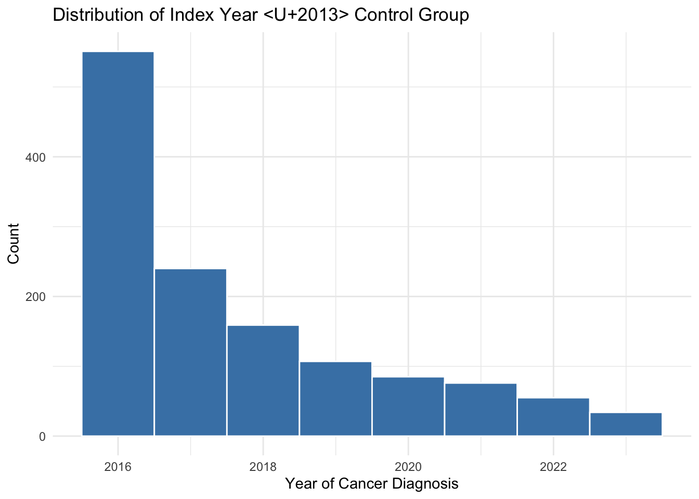

Control Group – Descriptive Analysis
Descriptive Analysis
Index Year Distribution
Table 1 – Demographics
| Characteristic | N = 1,3071 |
|---|---|
| Age | 67 (58, 74) |
| Gender_Legal_Sex | |
| Female | 662 (51%) |
| Male | 645 (49%) |
| Race1 | |
| Asian | 1 (<0.1%) |
| Black | 4 (0.3%) |
| Other/Unknown | 20 (1.5%) |
| White | 1,282 (98%) |
| Ethnic_Group | |
| Hispanic | 3 (0.2%) |
| Non_hispanic | 1,163 (89%) |
| Other | 141 (11%) |
| dm | 178 (14%) |
| htn | 828 (63%) |
| cad | 188 (14%) |
| cirrhosis | 9 (0.7%) |
| ace_arb | 497 (38%) |
| diu | 431 (33%) |
| ppi | 415 (32%) |
| steroids | 484 (37%) |
| smoking | 558 (43%) |
| statins | 577 (44%) |
| dpp4i | 12 (0.9%) |
| sglt2i | 6 (0.5%) |
| eGFR_CRE_baseline | 82 (69, 94) |
| ckd_stage_baseline | |
| 1 | 445 (34%) |
| 2 | 692 (53%) |
| 3 | 158 (12%) |
| 4 | 11 (0.8%) |
| 5 | 1 (<0.1%) |
| pre_median_HGB_90days | 13.90 (12.90, 14.90) |
| Missing | 285 |
| pre_median_ALB_90days | 4.40 (4.20, 4.60) |
| Missing | 422 |
| n_cre_pre_1yr | 1 (0, 2) |
| n_cre_pre_all | 11 (4, 20) |
| pre_history_days | 4,252 (1,225, 6,353) |
| cre_rate_pre | 1.2 (0.7, 2.2) |
| Missing | 88 |
| has_pre_cre | 969 (74%) |
| n_cre_post | 13 (7, 27) |
| cre_rate_post | 1.9 (1.1, 3.9) |
| aki | 9 (0.7%) |
| 1 Median (Q1, Q3); n (%) | |